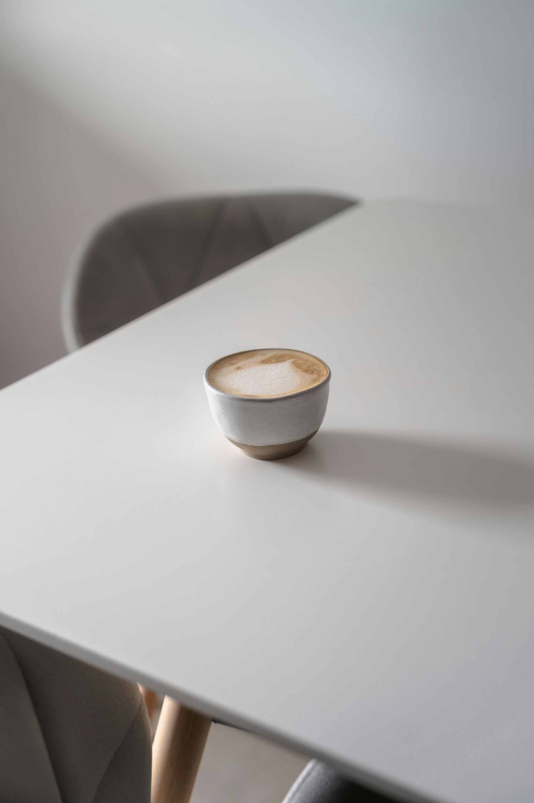
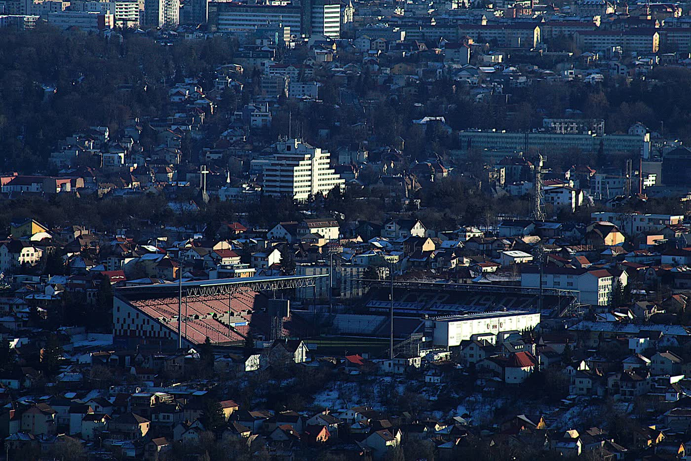
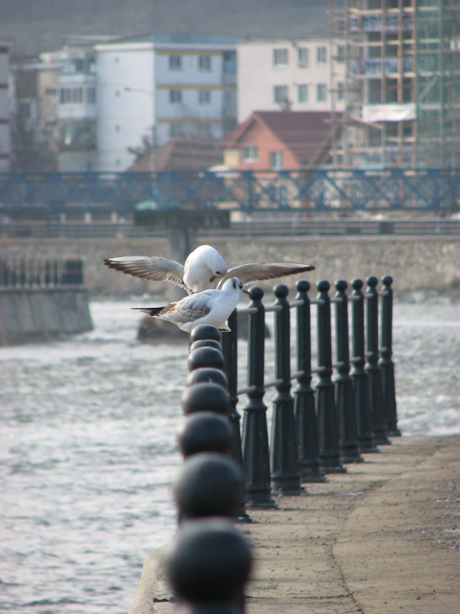

Nish
Cafea de specialitate pe Strada Horea 1, Cluj-Napoca. O încăpere mică, la parterul Palatului Berde, pe malul Someșului.
La bar




Nu există o listă publică de prețuri. Întrebați la tejghea.
Înăuntru
Poți lucra de pe laptop, este Wi-Fi, iar opțiunile vegane sunt pe listă. Copiii și câinii sunt bineveniți. Se acceptă cardul. Intrarea este accesibilă cu scaunul rulant. Telefonul nu este publicat.
Pe ușă
Programul este cel publicat de European Coffee Trip. Alte listări dau ore ușor diferite. Confirmați înainte să treceți.